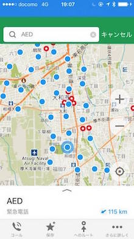

大和市防災マップ
みんなでつくる自由な地図「オープンストリートマップ」には、大和市内の消火栓やAED、スタンドパイプなどの位置情報が掲載されています。例えば、オフラインで地図を持ち運べる maps.me を普段使いしてみませんか。
みんなでつくる自由な地図「オープンストリートマップ」には、大和市内の消火栓やAED、スタンドパイプなどの位置情報が掲載されています。例えば、オフラインで地図を持ち運べる maps.me を普段使いしてみませんか。
歩け、歩け、続けることの大切さ。
Morbi non mauris massa. Duis elit mauris, malesuada nec suscipit ac, bibendum sed augue. Maecenas condimentum magna gravida, laoreet nunc sed, euismod sem.
Cloud-ready
Saves You Money
Fire Proof